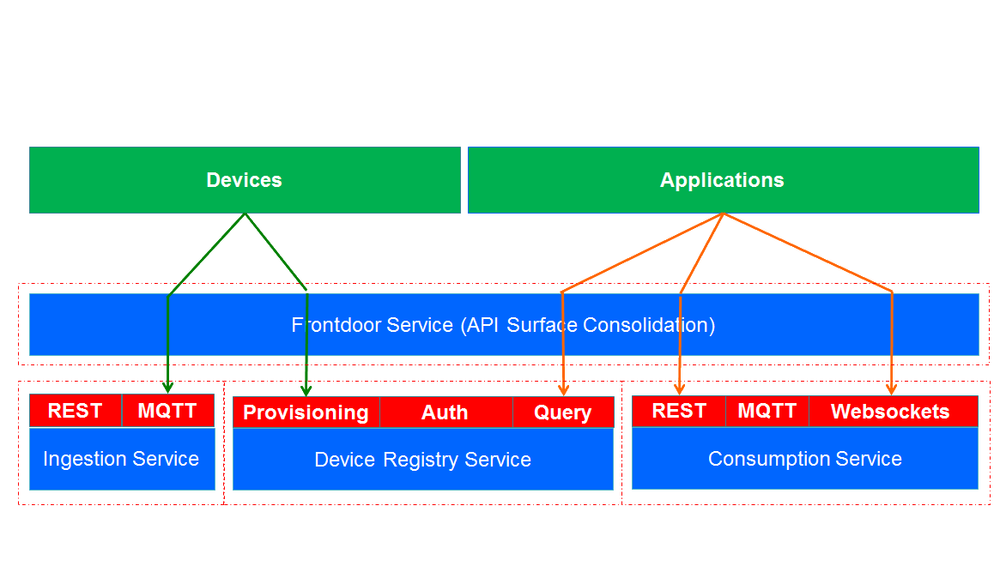

Containing the Chaos
Building and Scaling IoT Node Services on Azure Using SaaS and Containerization
Open Source Engineer, Microsoft
Internet of Things
It's great!
However, two minor problems...
The Internet
Things
In This Presentation
I solve all of these problems
...well, most of these problems
...well, some of these problems
Nitrogen.js
Our (other) IoT Solution
- Runs locally, or in any cloud
- Common protocols supported (e.g. MQTT)
- Can write to many destinations (Mongo, Azure Tables, EventHub, Qpidd)
- Interface-based implementation
- Identity, registration, batching, permissioning
Nitrogen Architecture
Oxide

IoT Portal for the user
Built using Ember-cli
Built using Ember-cli
Our Use-Case:
Car Telemetry
Sizing the Deployment
- We send up roughly 2 messages a second during operation of the vehicle
- 37% peak concurrent usage of car fleet is typical
- Design goal of monitoring car fleet of 30,000 vehicles
- Deployment designed to be capable of 60% usage of fleet
- Need to be able to support 60k messages/sec load from car fleet
- Each ingestion instance can handle roughly 1000 messages/second
- 60 ingestion instances
- 20 frontdoor instances
- 10 consumption instances
- 5 device registry instances
- So... roughly 100 servers in total
Deploying Nitrogen
Peeling the DevOps Onion
 Docker
Docker- CoreOS
- Deis
Our Nginx Dockerfile
FROM nitrogen/ubuntu:14.04
MAINTAINER Tim Park <tpark@microsoft.com>
# install confd
RUN \
wget https://github.com/kelseyhightower/confd/releases/download/v0.6.3/confd-0.6.3-linux-amd64 && \
sudo mv confd-0.6.3-linux-amd64 /usr/local/bin/confd && \
sudo chmod +x /usr/local/bin/confd
# install and configure nginx.
RUN \
add-apt-repository -y ppa:nginx/stable && \
apt-get update && \
apt-get install -y nginx && \
rm -rf /var/lib/apt/lists/* && \
echo "\ndaemon off;" >> /etc/nginx/nginx.conf && \
chown -R www-data:www-data /var/lib/nginx
# setup and run start script.
ADD start.sh /var/www/start.sh
RUN chmod +x /var/www/start.sh
CMD ./var/www/start.sh
# expose ports.
EXPOSE 80
EXPOSE 443
CoreOS
- Stripped down Linux distro
- Optimized to run containers
- Autoupdating
- Systemd / Fleetctl / etcd
- Cores/Containers, not VMs

Scaling the Rest
- Nitrogen is identity, ingest and routing
- Actually processing all of the incoming data takes more work
- We pump all of our data into Azure Event Hubs
- Hubs can scale to orders of magnitude over what we're currently driving
- Event Hubs can output into Storm/Spark pipelines